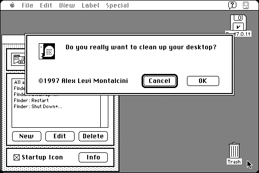

Download
no-desktop-cleanup-15.zip (78K) NoDesktopCleanup 1.5 repackaged into a zipped hfs disk image and checksum file. The disk image can be mounted with Mini vMac.
no-desktop-cleanup-15.hqx (106K) NoDesktopCleanup 1.5 in the original format.
copyright: Alessandro Levi Montalcini
mod date: Oct 1, 1997
license: Freeware
last known url
(gone)
Can “intercept and filter any menu command” in any application. For example, it can be configured to add a confirmation dialog to the “Clean Up Desktop” command in the Finder.

If you find these downloads useful, please consider helping the Gryphel Project, which hosts them.
Here are the md5 checksums for the downloads, signed with Gryphel Key 5:
--------- GRY SIGNED TEXT --------- ed2a8ec94561ed969c14bcfea26584b6 no-desktop-cleanup-15.zip 1353ed27302f7242fd1b740348aad828 no-desktop-cleanup-15.hqx ------- BEGIN GRY SIGNATURE ------- Gry/4Xa8CFcUzxdN/J+aqaC4SKVsNhYycd1tDqvBJv7caJmA2ne8+O7b0m8wV1YF znbRf2wOGEWtZNZUnmeikQ0cVbbM5Gbpfh+j5ol6uj9Bb4W+tAPX2MslKmQffni3 60HcqOyp8sl3darKmOhB9Fywi7PsaF7A4uoCvIusOgyKkmZqzuwrqCHP3WQ+L09m -------- END GRY SIGNATURE --------